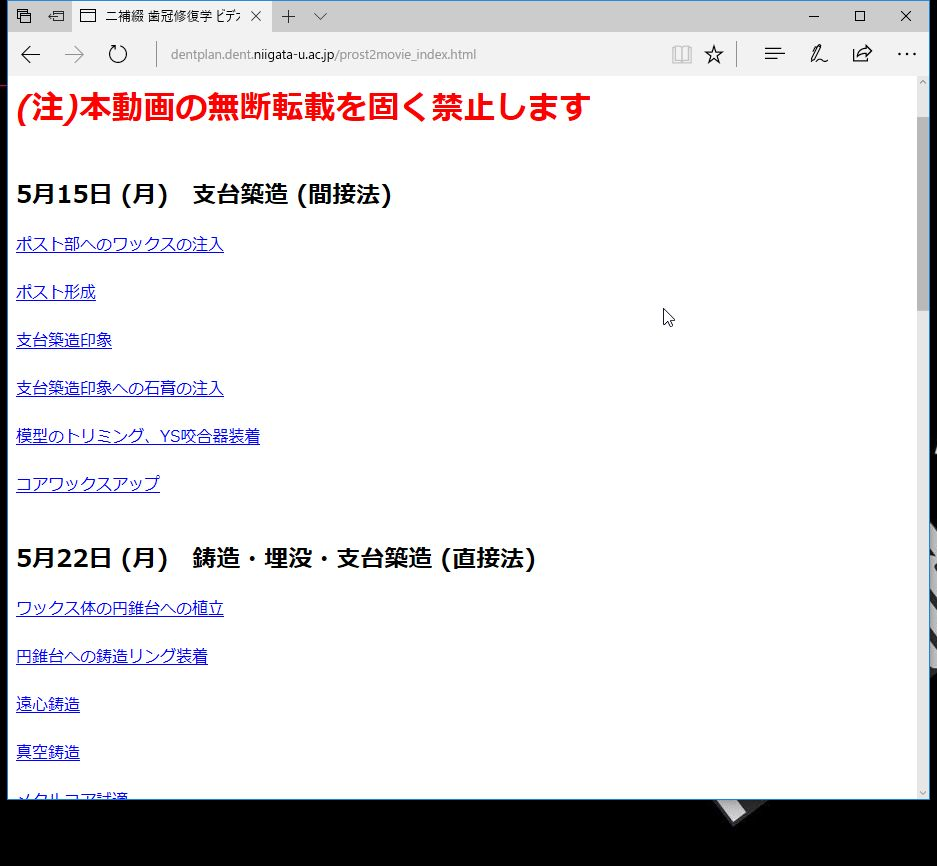

VLCメディアプレイヤーを使用した動画の再生方法
VLCメディアプレイヤーは学習用PCにインストールされています
1) 実習動画のページを開く

-----------------------------------------------------------------------------------------------------------------------------------------------------
2) 自分の見たい動画のリンクの上で右クリック
-----------------------------------------------------------------------------------------------------------------------------------------------------
3) 動画のリンクをコピーする(Internet Explorerの場合はショートカットのコピー)
-----------------------------------------------------------------------------------------------------------------------------------------------------
4) VLCメディアプレイヤーを起動した後、左上の"メディア"タブをクリック
-----------------------------------------------------------------------------------------------------------------------------------------------------
5) メディアタブ内の"ネットワークストリームを開く"をクリック
-----------------------------------------------------------------------------------------------------------------------------------------------------
6) ウィンドウが開くので、入力フォームにコピーしてきたリンクをペーストする
-----------------------------------------------------------------------------------------------------------------------------------------------------
7) ウィンドウ下部の再生ボタンをクリックすれば再生される 少しタイムラグがあるので焦らないこと